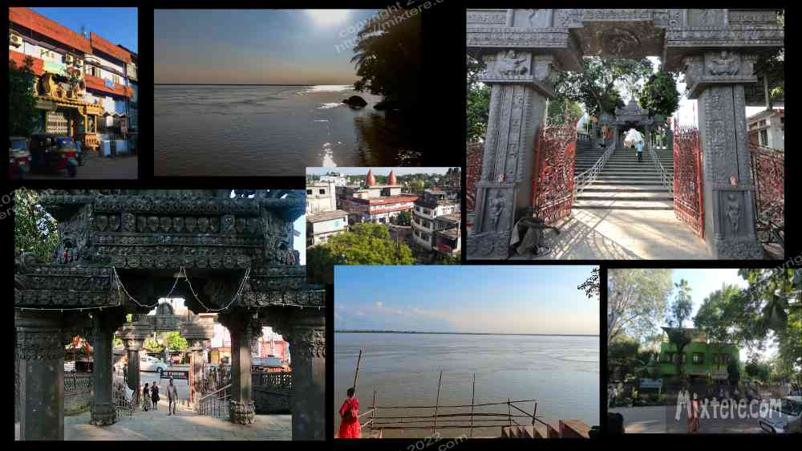
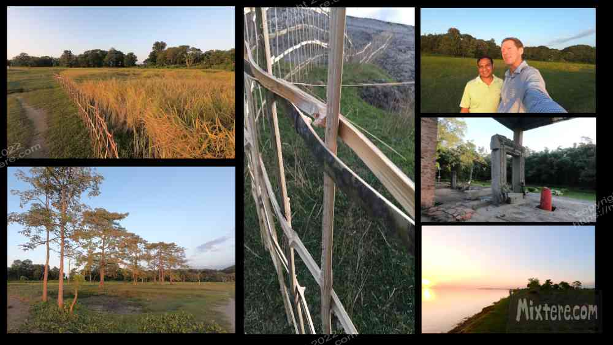
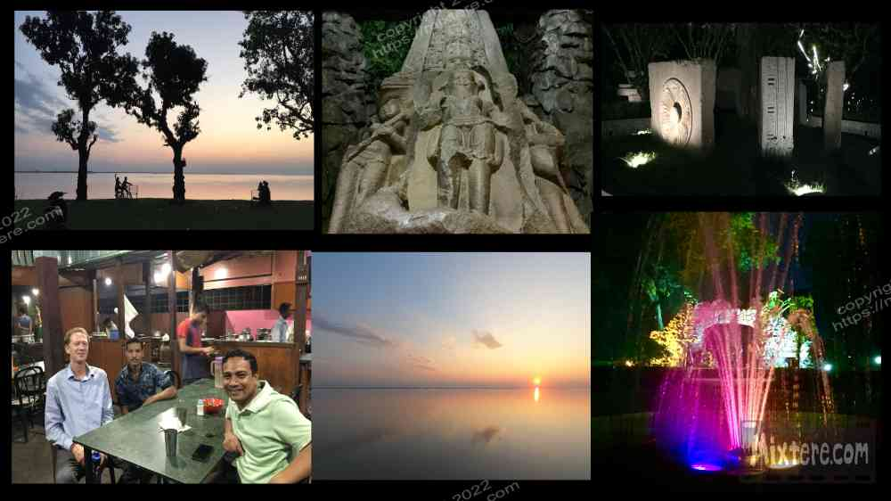

The next day I bade farewell to Aditi and her family as well as Guwahati and boarded a bus for Tezpur. This was a staging point to catch a shared jeep (Sumo) up to Tawang, Arunachal Pradesh. Hironmoy’s words of praise about Assam’s ASTC bus system proved to be true. There was no need to book a “tourist bus.” I was traveling with the locals at a fraction of the price of the tourist busses. Here I received all the benefits of riding the train, sharing the ride with the locals, meeting people without a hustling angle, participating in the local rhythms instead of observing them from a cloistered, air-conditioned cab. My fellow passengers generously chatted with me, watched out for me, helped me with my bags, helped me find a seat and made sure I did not miss my stop. I was treated as a privileged visitor. Thanks everyone!
Tezpur turned out to be a pleasant surprise, Biswajit an exceptional host and his family very welcoming. They lived in a nice house near the railway station; wife, daughter, father, mother and perhaps the requisite mother in law. I don’t think I met everyone there. I hired Biswajit for an afternoon as part of his fledgling company Tezpur Tours. I learned how much he cares about his hometown, one he had left a lucrative engineering job in Dehli to return to. Tezpur seems to be quite unknown to tourists. As is probably true of all spots in India, Tezpur is an ancient town with a rich heritage and culture. And like Guwahati it didn’t feel like any India I had known. I believe the area was once territory of the Ahom tribes of what is now Thailand. Tezpur looked not unlike the Chang mai that I saw as a kid, but it was mostly absent the wandering tourists except for me. Like Guwahati it is situated along the Brahmaputra river which afforded it magical sensibility.
=
The Brahmaputra is a powerful presence along the shores of Tezpur. The river really made a strong impression on me. I had heard so much about it through the years and I was fascinated to finally see it. The bus had crossed a bridge over it before I even set foot in Tezpur and during our tour Biswajit had stopped at a shrine to Ganesh right next to a river ghat. The river was wide, brown... and ominous. I noticed that there was almost no one in the water save for a few fisherman checking their nets. Its current was almost imperceptible but feared and said to be strong. India is not known for its swimming instruction and I had heard that the Brahmaputra claims a number of lives each year. Perhaps I was reading into the river from hearing about this but I think not. There was something immensely powerful about it. It was so wide and vast it and with no visible rapids or anything, I was tempted to think that there was not even much of a current. But there’s something about brown water. It holds greater secrets as you can’t see through it. Even surfing familiar breaks during a rain storm the brown water is unsettling and intensifies a sense of danger for me. It’s hard to tell what the real situation was along this river. Many people in Southeast Asia are afraid of water as knowing how to swim is rare. It’s always the fishermen that have the water experience. That evening at sunset Biswajit took me for a like hike along the river. People were planting vegetables right along the path as the soil was good and the plants had plenty of water at hand. Along the shore locals had set up woven basket fish traps. We came across a few of these folks checking their traps that evening. Biswajit asked them but they hadn’t caught anything. I took a few photos as the sun went down.

We drove on and stopped at a local park. There are all these ancient stones laying around Tezpur. They had originally been part of some structures and ancient monuments in the area. But through the years these monuments had fallen and the stones had been relocated and misused by people for various things. I don’t think Tezpur was a high priority on the government’s list of places to preserve, despite the town’s rich heritage. Someone had the idea to collect the stones and arrange them in a manner that befitted their heritage, consolidated together in a central park. That is what we toured through that evening. It was a little strange having the colored electric lights setting the scene for people to snap selfies amongst the ancient stones. But they were being cared for and protected, which is good. We left the park and Biswajit took me to a simple restaurant for some food and sweets. I had an Assamese thali and was introduced to a condiment made with the “elephant apple,” a fruit that apparently has powers to help overcome diabetes. Such a fruit could help a lot of people in the USA, where people consume 30 ounce cokes with lunch... and diabetes is rampant.
Biswajit gushed about his town and rattled off a constant volley of Hindu stories. Unfortunately, no matter how deep Biswajit’s knowledge of and passion for Tezpur was, I was retaining only about ten percent of what he was telling me. I had been moving too quickly and was running on empty. Right about after dinner my brain stopped retaining new information. I had to ask Biswajit to ease off the Hindu lore. We headed back to Biswajit’s home. A cold bucket shower was not exactly in line with the description on airbnb but I was far enough along on my journey not to be too phased by this. We eventually said our goodnights and I collapsed on my bed. I tried to rest up as best I could for the jeep journey to Bomdila and then onto the high altitude destination of Tawang the following day.

Right-click below to open in new tab

Click below for next chapter